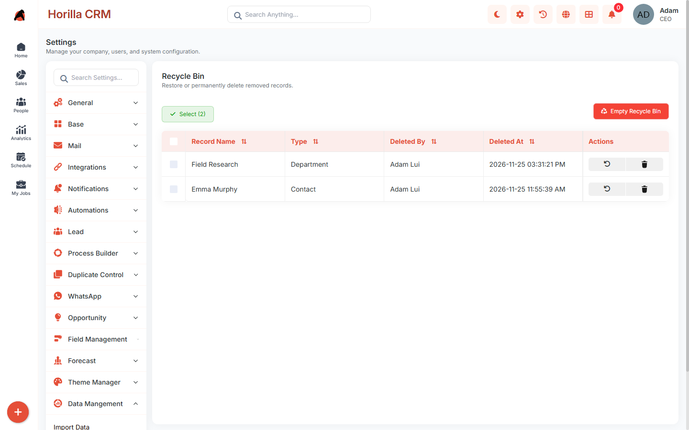
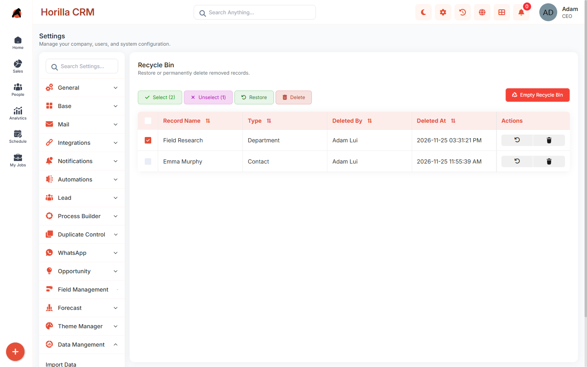
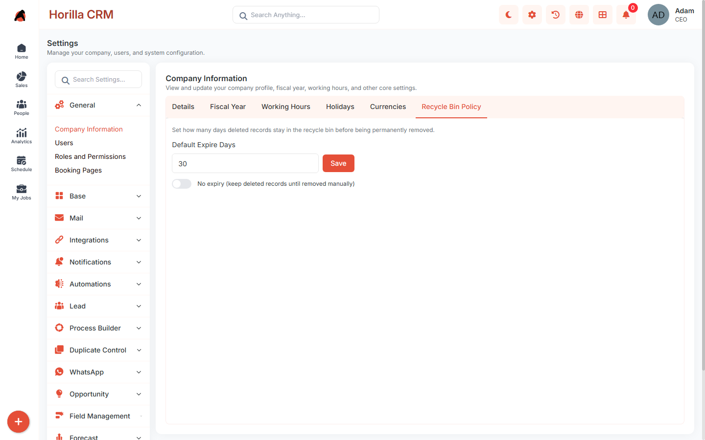

Introduction
The Recycle Bin is temporary storage for deleted records, allowing users either to restore them or to delete them permanently. It improves data security, guards against accidental loss, and supports organisational retention policies through a configurable expiry period.
Key Features and Functionalities
1.1 Recycle Bin Overview
Purpose: a central place to manage deleted records from every CRM module.
Location: Settings → Data Management → Recycle Bin.
Each record is listed with:
| Detail | Contents |
|---|---|
| Record Name | Name of the deleted record. |
| Type | Module the record came from. |
| Deleted By | User who deleted it. |
| Deleted At | Timestamp of the deletion. |
- Search, filtering and sorting are supported.
- Action buttons: Restore, which undoes the deletion, and Permanent Delete, which removes the record forever.
- Multi-selection checkboxes enable bulk operations.


1.2 Restoring Deleted Records
Purpose: recover records that were deleted by mistake.
- Restore a single record with the Restore icon in the Actions column.
- Restore several at once by selecting them and clicking the Restore button.
- A confirmation prompt appears before the restoration goes ahead.
- Restored records return immediately to their original module with data integrity preserved.
1.3 Permanent Deletion of Records
Purpose: remove unwanted records securely and deliberately.
- Delete a single record with the Delete icon.
- Delete several at once with the Delete button after selecting them.
- A confirmation dialog appears first.
Permanently deleted records cannot be recovered.
1.4 Empty Recycle Bin
Purpose: clear every deleted record in one action.
- Permanently deletes all items currently held in the Recycle Bin.
- A confirmation dialog appears first.
- It is intended for administrators clearing large volumes of data.
Once confirmed, emptying the Recycle Bin cannot be undone.
1.5 Bulk Actions and Selection
Purpose: manage large volumes of deleted data more efficiently.
- Selection options: Select All, Unselect and a Selected (count) indicator.
- Bulk actions: restore the selected records, or delete them permanently.
- Selected records are highlighted before any action is carried out.
1.6 Recycle Bin Policy (expiry settings)
Purpose: automate data retention and compliance.
- Location: Settings → General → Company Information → Recycle Bin Policy.
- Administrators set a Default Expiry Days value for deleted records.
- When that period ends, the records are removed permanently and automatically.
- No expiry keeps deleted records until someone removes them. While it is on, the days field cannot be saved.
